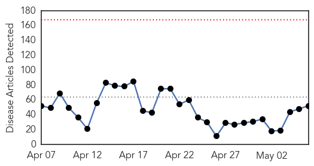
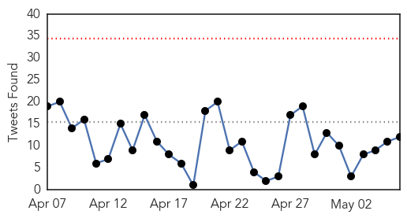
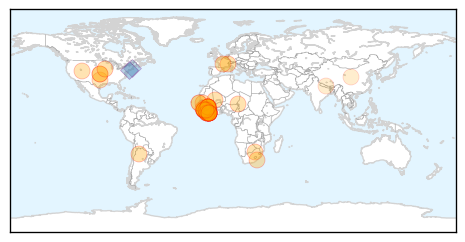
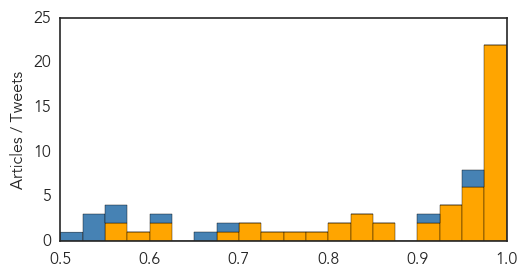
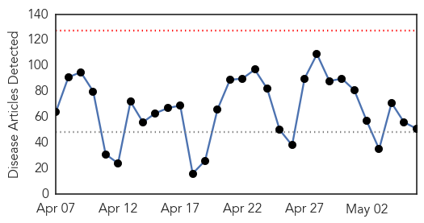

Ebola
30-Day Web Trend
0 alerts, 0 warnings

30-Day Twitter Trend
0 alerts, 0 warnings

Article Locations
Article Confidences
Top Articles:
- 1.000
- Médecins Sans Frontières (MSF) International
- 1.000
- Man spreads Ebola via sex 5 months after cured
- 1.000
- Progress against Ebola advances in Guinea and Sierra Leone
- 0.999
- Managing rumours and misinformation in West Africa
- 0.999
- After Ebola: Are We Ready for the Next Epidemic?
- 0.999
- Inside the troubled early days of the Ebola response
- 0.999
- Tracing the Ebola Outbreak, Scientists Hunt a Silent Epidemic « Awoko Newspaper
- 0.998
- Report: 5 months after infection, man spreads Ebola via sex
- 0.998
- Ebola deaths pass 11,000 mark: WHO
- 0.997
- How Cuba Could Stop the Next Ebola Outbreak
- 0.996
- Ebola Virus Lives on in Male Survivors’ Testicles, Can Be Sexually Transmitted
- 0.995
- Liberia poised to be declared Ebola-free
- 0.994
- Ebola End in Sight
- 0.991
- Ebola experience is a wake-up call for the WHO
- 0.990
- Sierra Leone: Schools Reopen After Ebola Outbreak
- 0.986
- Bird Flu: Our Plague Reporter Weighs In
- 0.986
- Political differences delayed quick response to Ebola crisis: officials
- 0.984
- Y's Men hear about coping with the Ebola crisis
- 0.984
- Scientists trace Ebola's genetic path in Africa;
- 0.982
- Liberia recovering from "national nightmare"
- 0.976
- Confidence growing Ebola fight is almost over
- 0.975
- Ebola end in sight as weekly infections drop to single figures
- 0.969
- Military, US to make Ebola vaccine in Abuja
- 0.967
- World Bank Pleased with Usage of Its Ebola Resources
- 0.961
- The next plague: How many mutations are we away from disaster?
- 0.955
- Scientists tracing genetic path of Ebola in Africa
- 0.954
- Argentina to ship more drugs to Sierra Leone
- 0.951
- Clean, safe hand saves lives…WHO « Awoko Newspaper
- 0.939
- Danish NGO helps Liberian Ebola survivors rebuild lives
- 0.931
- The state of the healthcare system 2015 - Aaron Motsoaledi - POLITICS
- 0.930
- Minister Aaron Motsoaledi: Health Dept Budget Vote 2015/16
- 0.927
- West and Central Africa Region Weekly Humanitarian Snapshot (28 April – 5 May 2015) - Niger
- 0.908
- Mormon missionaries to return after African Ebola outbreak
- 0.903
- World Policy Institute
- 0.858
- National Nurses' Day: Recalling Nurses in the News
- 0.850
- Red Cross concludes safe and dignified burials in Liberia - Liberia
- 0.846
- What Is It Like Reporting from the Center of an Ebola Outbreak?
- 0.843
- Ebola infections drop to single figures
- 0.834
- Brown calls for massive celebration
- 0.810
- As WHO Declares Liberia ‘Ebola Free’ Saturday, May 9, 2015, LNRC Deactivates Safe Burial
- 0.806
- INTERVIEW: as Liberia moves past Ebola ‘nightmare,’ security and political challenges still ahead, UN envoy cautions
- 0.799
- 'Today I Am Healed. Tomorrow I Return to Heal Another.'
- 0.769
- Meet a Nurse Who Survived Ebola, then Went Back to the Outbreak
- 0.750
- Over 600 Ebola Fighters Get Certificates of Appreciation
- 0.718
- Security Council hears Liberia briefing as country anticipates being declared Ebola-free
- 0.717
- Security Council hears Liberia briefing as country anticipates being Ebola-free
- 0.683
- In Liberia, helping vulnerable people fight Ebola - Liberia
- 0.624
- WHO ‘cannot continue as is’
- 0.616
- Ebola: Weekly Infections Drop To Single Figures
- 0.576
- Interview: WFP closely working with foreign countries including China, NGOs in relief efforts in quake-hit Nepal
Showing top 50 articles...
Top Tweets:
- 0.993
- NEW: Epidemiological and Surveillance Response to Ebola Virus Disease Outbreak in Lofa Count, Liberia http://t.co/IhWqSWQZGF ebola
- 0.990
- Ebola Virus Lives on Hospital Surfaces for Days - Live Science http://t.co/ixZK4VPjZV ebola EVD
- 0.974
- Only 18 Ebola cases in wk ending May 3, half each in Guinea & Sierra Leone. If Liberia gets to May 9 w/o a case, its outbreak will be over.
- 0.895
- Expert: US Ebola response lacking - American Thinker (blog) http://t.co/hO2zvSs5An ebola EVD
- 0.893
- Ebola Virus Lives on Hospital Surfaces for Days - Live Science http://t.co/CbzYHc54Pa
- 0.892
- Liberia Days Away From Being Ebola-Free, Official Says - Voice of America http://t.co/dA6Tr8p6VR ebola EVD
- 0.867
- The HumanRights Dimension of West Africa's Ebola Outbreak GrantCraft http://t.co/aHdlkKPTUc
- 0.859
- Tracing the Ebola Outbreak, Scientists Hunt a Silent Epidemic http://t.co/qSlPsHhvl1
- 0.852
- Le Libéria espère pouvoir bientôt être officiellement déclaré exempt du virus Ebola, selon l'ONU http://t.co/rYS4NFLX0H
- 0.843
- Patient Self-Reports Having Ebola at a Shannon Clinic Sunday - San Angelo LIVE! http://t.co/jPybsU6jGe ebola EVD
- 0.815
- RT: Ebola: moins de dix nouveaux cas aussi bien en Guinée qu'en Sierra Leone http://t.co/ZfYXCFGgSW http://t.co/LbHyeTXOnR
- 0.811
- Ebola shows how our global health priorities need to be shaken up - The Guardian http://t.co/0kkFywhRK1 ebola EVD
- 0.687
- RT: For 3 months, Ebola spread across the forest region of Guinea. But it was mistaken for cholera and malaria. EbolaOUTBREAK
- 0.670
- Ebola outbreak was a warning for the world, says http://t.co/p0UQWSqhwa via
- 0.667
- Ebola numbers look hopeful for an end of the outbreak. Look bleak, though, for vaccine trials. http://t.co/Qzgrz3EBqX
- 0.663
- The West African Ebola outbreak gives new meaning to "off the charts" https://t.co/6VwV2d6MfT
- 0.638
- Kei Kamara soutient l'Afrique contre Ebola AfricaAgainstEbola onstensemble http://t.co/XpMMqKXNtd
- 0.620
- May 6 news pouch on avianflu avianinfluenza Ebola EbolaResponse MERS Nepal NepalQuakeRelief is here: http://t.co/hk9zb6Dq4o
- 0.562
- SierraLeone. Les lois et règlements relatifs à Ebola ne doivent pas servir à restreindre la liberté d'expressn http://t.co/t1u39dYBFh
- 0.545
- How long does Ebola virus remain viable on stainless steel, plastic, Tyvek & in blood? A while. http://t.co/Cnq5fiQSh9 NIH
- 0.543
- At least 10,899 people died from Ebola during this outbreak: every one of them had stories we needed to hear. EbolaOUTBREAK
Unknown
30-Day Web Trend
0 alerts, 0 warnings

30-Day Twitter Trend
3 alerts, 0 warnings

Article Locations

Article Confidences

Top Articles:
- 0.917
- Chicago Tribune
- 0.917
- Chicago Tribune
- 0.917
- Chicago Tribune
- 0.917
- Chicago Tribune
- 0.917
- Chicago Tribune
- 0.917
- Chicago Tribune
- 0.917
- Chicago Tribune
- 0.917
- Chicago Tribune
- 0.917
- Chicago Tribune
- 0.913
- Westport issued with boil water notice following outbreak
- 0.910
- The world windows to Thailand
- 0.896
- Whatcom County WA Updates Milk Makers Fest E. coli Outbreak
- 0.894
- WHO plays down risk of epidemic outbreak in Nepal
- 0.890
- Surge in NSW flu cases prompts cruise ship warning
- 0.883
- BMJ Blogs: The BMJ Blog Archive The aftermath of Nepal’s earthquake—health sector response
- 0.881
- Surge in flu cases in NSW prompts cruise ship warning
- 0.866
- An uptick in Lyme disease in Utah?
- 0.831
- Rabbit owners at 'panic stations' in disease outbreak
- 0.819
- Dept. of Health: How much do you know about H20?
- 0.819
- Declaration by the High Representative, Federica Mogherini, on behalf of the EU on World Press Freedom Day
- 0.802
- 5 Things Dog Owners Need to Know About Alabama Rot
- 0.785
- Racing officials warn of horse-infecting virus
- 0.782
- Poultry industry receives some good news
- 0.747
- Washington's Milk Makers Fest E. coli Outbreak Numbers Rise
- 0.742
- Milk Makers Fest E. coli outbreak case tally grows to 42
- 0.697
- Saudi-led strikes target Houthi positions on border with Yemen
- 0.697
- PEN gala honours Charlie Hebdo despite uproar
- 0.697
- Netanyahu locked in talks as coalition hangs in balance
- 0.697
- Netanyahu clinches deal to form new Israeli government
- 0.697
- Despite party suspension, French far-right leader remains liability
- 0.694
- Very early virological failure and drug resistance mutations in a woman on antiretroviral therapy in Eastern Cape, South Africa
- 0.689
- Nitte varsity docs aid earthquake victims
- 0.684
- Bacteria to the Rescue! New Treatments for a Deadly Common Infection
- 0.675
- Column: Join the Conversation About Reducing Alzheimer’s Risk
- 0.644
- UN health agency expands support to areas cut off by quake
- 0.612
- Purdue researchers’ model tracks flu using Google, tweets
- 0.594
- Ghana, Business Advice, Jobs, News, Business Directory, Real Estate, Finance, Forms, Auto
- 0.592
- Roperos: HIV cases in region
- 0.583
- Fecal Microbiota Transplant Cures C diff, Blocks Multidrug-Resistant Pathogens
- 0.581
- Vesicular Stomatitis Confirmed in Arizona, Utah Equids
- 0.575
- Leicester fundraisers donate more than £340,000 to help earthquake victims in Nepal
- 0.561
- Sierra Leone ranks 169 « Awoko Newspaper
- 0.560
- 'Cruise Ship' Norovirus Bug Can Spread by Air, Study Finds
- 0.551
- Government opens probe into health fund abuse
- 0.547
- The deadly antidote
- 0.542
- Water and sanitation in health centres in Mali – podcast
- 0.528
- Press and Information Office
- 0.527
- Mugabe: Villainous or Misunderstood?
- 0.526
- International relief continues to pour in
- 0.523
- Bhutan’s medical team in Nepal expanded
Showing top 50 articles...
Top Tweets:
- 0.584
- Me cago en el dios de los trastes.